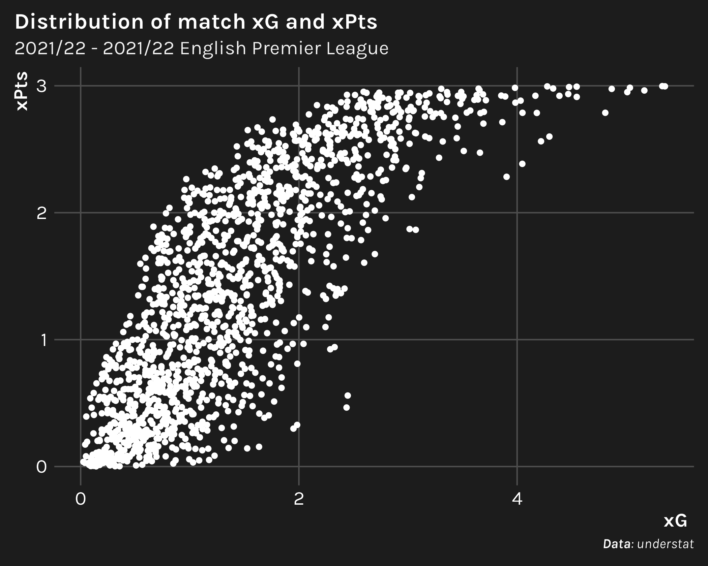
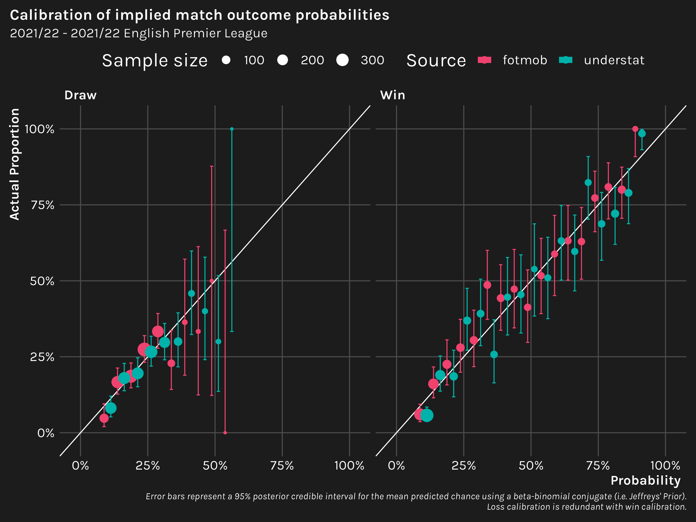

So let’s talk about expected points (xPts). The one sentence explainer for xPts: it’s a number between 0 and 3 assigned to each team in a match that we estimate from the xG of each shot in the match. Teams that accumulate more xG than their opponents in the match are more likely to have xPts closer to 3, i.e. the points awarded for a win, and those that accumulate less than their opponents are more likely to earn xPts closer to 0. xPts is convenient for translating a team’s xG (relative to it’s opponents) to the team’s expected placement in the standings.
While severaloutlets have described computing expected points with simulation1, simulation is actually not necessary if you have the xG for every shot taken in a match.2 For example, let’s say team A shoots six times with an xG of 0.1 for each shot, and team B shoots three shots with xG’s of 0.1, 0.2, and 0.3 respectively. Given these goal probabilities, we can analytically compute xPts as follows.
First, we find the probability of scoring 0, 1, 2, etc. goals (up to the number of shots taken).3
For this example, we arrive at the interesting result that, despite the two teams total xG being equal (=0.6), team B has a slightly higher probability of winning. There have been plenty of explanations on this “quality vs. quantity” phenomenon, so I won’t go into it in detail. Nonetheless, this simple example illustrates why it can be useful to translate xG into another form—doing so can provide a better perspective on match results and, consequently, team placement in the standings.
Objectives
So we’ve gone over what expected points are and why they’re important. Now we set out to do the following.
Calculate xPts from shot xG for multiple seasons of data. We’ll limit the scope to the 2020/21 and 2021/22 seasons for the English Premier League.5
Compare the calibration of the understat and fotmob match outcome probabilities.{worldfootballR} makes it easy for us to get xG from both understat and fotmob, and it should be interesting to compare the the predictive performance of the two models.
Compare predictions of actual season-long points using xPts that we derive from understat and fotmob xG. In particular, we’ll be interested to see if our conclusions regarding the better source for xG here matches the conclusions for (2).
Analysis
1. Calculating xPts from xG
Let’s start by using the load_understat_league_shots() function from {worldfootballR} to retrieve understat xG by shot.
Code
library(readr)library(dplyr)library(tibble)library(tidyr)library(stringr)library(lubridate)library(worldfootballR) ## version: 0.5.12.5000library(janitor)rename_home_away_teams <-function(df) { df |>mutate(team =ifelse(is_home, home_team, away_team),opponent =ifelse(is_home, away_team, home_team) ) |>select(-c(home_team, away_team)) }convert_understat_year_to_season <-function(x) {sprintf('%s/%s', x, str_sub(x +1, 3, 4))}## we'll use all of the shots later when exporing understat data onlyall_understat_shots <-load_understat_league_shots('EPL') |>as_tibble() |>## camelcase like "xG" is for Java scrubsclean_names() |>filter(season <=2021) |>## transmute = select + mutatetransmute( match_id,## "2021/2022" format so that we have a clear, consistent way to represent seasonacross(season, convert_understat_year_to_season),## to convert "2020-09-12 11:30:00" to a date ("2020-09-12")across(date, lubridate::date), home_team, away_team,is_home = h_a =='h',xg = x_g ) |>rename_home_away_teams() |>arrange(season, date, team)## but when comparing understat with fotmob, we'll need to limit the seasons to just## those that both sources haveunderstat_shots <- all_understat_shots |>filter(season >=2020)
We can use load_fotmob_match_details() to get fotmob’s shot xG in a similar fashion.6
Code
## manually created CSV with at least 2 columns: team_understat, team_fotmob.## use the team_understat name to be consistent across sources.team_mapping <-'https://raw.githubusercontent.com/tonyelhabr/sports_viz/master/59-xg_xpoints/team_mapping.csv'|>read_csv()rename_fotmob_teams <-function(df) { df |>left_join( team_mapping |>select(team_understat, team_fotmob),by =c('home_team'='team_fotmob') ) |>select(-home_team) |>rename(home_team = team_understat) |>left_join( team_mapping |>select(team_understat, team_fotmob),by =c('away_team'='team_fotmob') ) |>select(-away_team) |>rename(away_team = team_understat)}fotmob_shots <-load_fotmob_match_details(country ='ENG',league_name ='Premier League') |>mutate(## to convert strings from 'Sat, Sep 12, 2020, 11:30 UTC' to a datedate =strptime(match_time_utc, '%a, %b %d, %Y, %H:%M UTC', tz ='UTC') |>date(),## fotmob's parent_league_season always reflects the current season, so we need to manually## define the season from the date. we would certainly want a more automated approach## if working with more seasons and more leagues.season =case_when( date >=ymd('2020-09-12') & date <=ymd('2021-05-23') ~'2020/21', date >=ymd('2021-08-13') & date <=ymd('2022-05-22') ~'2021/22',TRUE~NA_character_ ) ) |>## the NAs are for 2022/2023 (incomplete as of writing) and the partial data for 2019/2020drop_na(season) |>transmute( match_id, season, date, home_team, away_team,is_home = team_id == home_team_id,## some shots with NAs for some reasonxg =coalesce(expected_goals, 0) ) |>rename_fotmob_teams() |>rename_home_away_teams() |>arrange(season, date, team)
Alright, now the fun part. We functionalize the code from the example for calculating the probability that xG will result in 0, 1, 2, etc. goals.
Next, we identify all possible goal combinations using xG as “weights” to compute the relative likelihood of each combination, and then analytically calculate the probabilities of winning, losing, and drawing.
Let’s take a quick peak at the distributions of xG and xPts, both as a sanity check and to enhance our understanding of the relationship between the two. When plotting xPts as a function xG, we should expect to see a monotonically increasing relationship where xPts bottoms out at zero and tops out at three.

Further, if there is any doubt about the expected points calculation, note that understat offers xPts directly in their data. The mean absolute error of our calculation of xPts with theirs is ~0.02.
Note that the win and loss correlations are identical. This is due to the symmetric nature of the data—we have two records for each match, one from each team’s perspective.8
Predicting match outcomes with binary logistic regression
Now let’s compare how “good” the implied probabilities from the two sources are. To do this, we’ll create binary logistic regression models to predict a given outcome and compute:
The MSE (where lower is “better”) and the BSS (where higher is “better”) lead us to the same conclusion—the models based on understat’s xG slightly outperform the one based on fotmob’s xG.
Moreover, looking at the calibration plot, the understat model predictions seem to stick closer to the 45 degree slope representing perfect calibration.

Predicting points with linear regression
Alternatively, we could regress points on expected points. For linear regression, we can use the root mean squared error (RMSE) (where lower is “better”) and R squared (where higher is “better”) to compare the models.
The understat model proves to be better by both metrics, having a lower RMSE and higher R squared than the fotmob model.
Predicting match outcomes with multinomial logistic regression
Personally, I don’t like predicting points directly like this since it’s a discrete variable that can only take on three values (0, 1, and 3). If we’re going to predict points instead of a probability, I think the better approach is to run a multinomial logistic regression and to convert the predicted probabilities to expected points.
Again, we see that understat has a lower RMSE and higher R squared. The implication that understat performs slightly better than fotmob agrees with the results from the binary logistic regression approiach for predicting match outcome probabilities and the linear regression approach for predicting points.
Overall, we might say that understat seems to be the better of the two xG sources for explaining individual match results, although the margin is small enough that I would hesitate to say that this is the true across all leagues and all seasons.
3. Season predictive performance
How do the understat and fotmob models fare if we aggregate up the expected points to the season level and predict actual points?11
The results are closer than those at the match-level. In fact, fotmob just barely edges out understat in terms of RMSE xPts, although understat outperforms fotmob according to R squared by a relatively comfortable 0.02. It’s harder to make a general statement regarding which data source provides better xG for explaining season-long expected points, although we might lean in favor of understat again.
Conclusion
Overall, we find that understat’s xG model seems to very slightly outperform fotmob’s in terms of explaining match results and season-long point totals.
In a follow up post, we’ll go more in depth regarding how we can leverage the match outcome probabilities to simulate season-ending points in a more rigorous fashion that done in the last section above.
Now, if you desire the statistical properties that simulation offers, such as an estimation of error, that’s understandable; however, in write-ups that I’ve seen, such is not mentioned explicitly. Additionally, if one chooses to go down the simulation route because they believe that it helps to suppress flaws with the xG model, that’s also understandable. On the other hand, the analytical approach I present should present nearly identical results to that which one would find with simulation, and it offers the advantage of being much faster.↩︎
Plotting code is omitted throughout the post since it’s not particularly instructive.↩︎
How does this work? Under the assumption that xG comes from a Poisson binomial distribution, we look at all combinations of makes and misses of the shots and compare the relative proportion of instances in which one team’s number of success, i.e. goals, is greater than, equal to, or less than their opponent’s.↩︎
We’ve limited the scope for several reasons: (1) fotmob only has complete xG data for the 2020/21 and 2021/22 seasons as of writing, (2) I didn’t want to have to map team names across the two data sources for a ton of teams; and (3) of all league, I’m most interested in the EPL 😄.↩︎
Note that there are three additional shots in the fotmob data. There’s no simple solution to resolving this data discrepancy since we don’t have matching shot identifiers in the two data sets 🤷.↩︎
Using the adjective “predictive” is a little misleading, since we’re not actually making predictions out-of-sample. Rather, we’re using models based on xG to evaluate which xG data source better explains the observed results.↩︎
Home field advantage is treated as a feature instead of defined directly via columns, i.e. home_team, home_score, etc., which is good practice in general.↩︎
Draws occur for 22.5% of matches in the data set, and wins and losses occur in 38.8% of matches each.↩︎
Personally, I tend to rely on BSS wherever I can. Not only is it more interpretable—it’s a number between 0 and 1, while MSE can take on any value, depending on the context—I like that it forces one to compare to a baseline, which is a good principle in general.↩︎
Note that aggregating match-level probabilities to the season-level is not a statistically valid way to use the probabilities, which are intended to be treated independently.↩︎